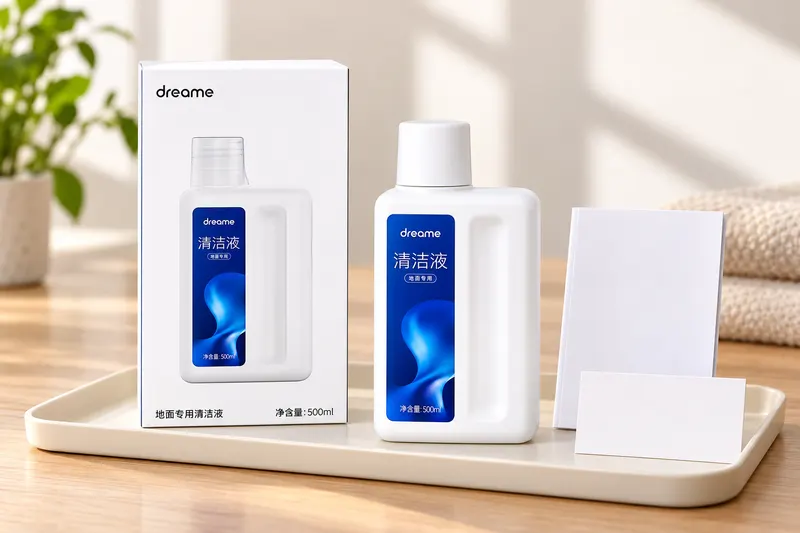

드리미 (Dreame)
드리미 X50 Ultra 세제통 잔량이 줄지 않을 때 확인할 것
글·구성: 제이상점 · 기종별 소모품 규격·호환·유지비 요약본 (실물 구성 예시 사진과 상세 후기는 아래 네이버 블로그 모바일 원문에서 보실 수 있습니다.)

핵심 관리 · 선택 체크포인트
- 판매자 안내｜제이상점이 공식 자료와 현재 판매 옵션을 조사해 직접 작성했습니다.
- 세제를 보충했는데 통의 양이 그대로인 것처럼 보이면 새 병을 사야 할까요?
- 상품 상세 이미지를 바탕으로 구성한 세제 병·포장 예시입니다.
- X50 Ultra 설명서 인쇄 14쪽은 자동 세제통을 꺼내 상단 뚜껑을 열어 세정제를 넣고, 뚜껑을 닫아 클린 스테이션에 다시 설치하는 과정을 설명합니다.
- 현재 장착이 설명서 그림과 다른 것 같다면 임의로 통을 억지로 누르기보다
부품 규격 · 점검 기준표
| 확인할 항목 | 남겨 둘 기록 | 확인 범위 |
|---|---|---|
| 뚜껑과 재장착 | 설명서 순서대로 장착했는지 | X50 Ultra 인쇄 14쪽 |
| 보충 전후 | 보충한 날짜와 대략의 잔량 | 본인이 관찰한 정보 |
| 실제 실행 | 청소·세척한 날짜와 설정 | 현재 앱의 실제 기록 |
| 오류 표시 | 나온 문구를 그대로 메모 | 해당 모델 공식 지원 문의 |
자주 묻는 질문 (FAQ)
Q. 드리미X50Ultra의 뚜껑과 재장착 규격과 관리 기준은 무엇인가요?
A. 설명서 순서대로 장착했는지 규격을 사용하며, X50 Ultra 인쇄 14쪽 기준으로 점검·교체하면 청소 효율을 안정적으로 유지할 수 있습니다.
Q. 드리미X50Ultra의 보충 전후 규격과 관리 기준은 무엇인가요?
A. 보충한 날짜와 대략의 잔량 규격을 사용하며, 본인이 관찰한 정보 기준으로 점검·교체하면 청소 효율을 안정적으로 유지할 수 있습니다.
Q. 드리미X50Ultra의 실제 실행 규격과 관리 기준은 무엇인가요?
A. 청소·세척한 날짜와 설정 규격을 사용하며, 현재 앱의 실제 기록 기준으로 점검·교체하면 청소 효율을 안정적으로 유지할 수 있습니다.
💡 제이상점 1:1 전용 규격 검수 & 실속 구매 포인트
검수 상품: [정품] 드리미 세제 전용 세척액 세정제 소모품 X40 X50 X60
선택 가능 옵션: 1병 · 2병 (복수구매할인)
☑️ 단품 반복 배송비 대신 기간별 패키지로 1년 유지비 절감 · 물세척 부품 24시간 교대 건조 여분 확보 · 중국 구매대행·해외직배송(개인통관고유부호 확인)